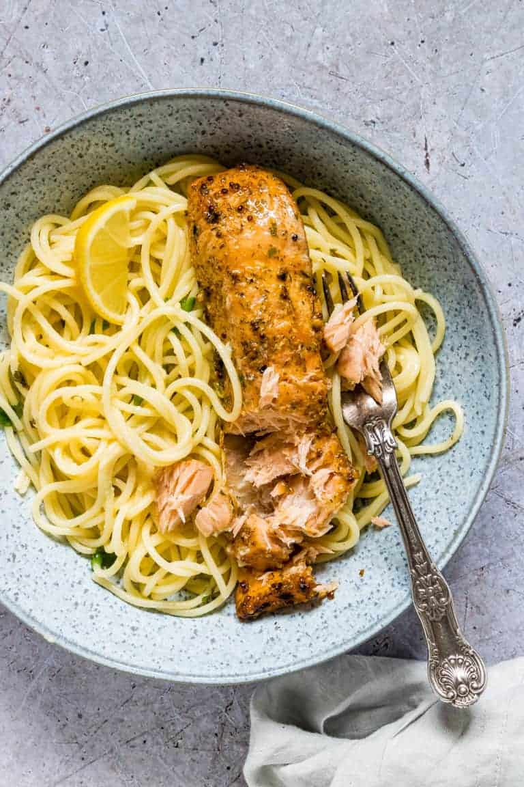

Lemon Salmon Pasta

Description
A simple and easy to cook pasta that still packs a punch. With zesty flavours of lemon, rich flavours of butter and salmon then topped off with lots and lots of parmesan, this one is sure to impress!
Ingredients
- 2x nob of butter
- Juice of two lemons
- 300-400g pasta of your choice
- reserved cup of pasta water
- 100g minimum parmesan or however much you like
- 240g salmon
Steps
- Firstly get the pasta into some boiling water, set a timer for 10 minutes and let simmer.
- Once the pasta is simmering chop your salmon into chunks and juice your lemons.
- Cook the chunks of salmon in a pan until slightly browned on the outside, then remove from the pan and set aside.
- Add the butter to the pan you used for the salmon and melt on medium heat.
- When the butter has melted and started to bubble add the lemon juice and mix together.
- Let this start to bubble again before adding the pasta and salmon to the pan (you want the pasta to be aldente at this point).
- Give this a mix and let the pasta soak in some of the sauce for a minute or two before slowly adding your parmesan with some reserved pasta water to get your desired consistency of sauce.
- Let this come back up to a nice heat and then serve with some optional garnishing of parsley!